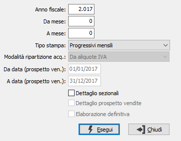
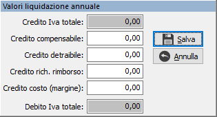

Stampa dati IVA generali
Il programma, effettua la stampa dei riepiloghi Iva necessari per la compilazione del modello Iva 11. Sono previsti diversi tipi di stampa, con valori progressivi o mensili. Scegliere Contabilità, Operazioni di fine esercizio, Stampa dati Iva generali. Appare la seguente maschera video:

ANNO FISCALE: inserire l’anno di cui si vuole ottenere la stampa.
DA MESE: indicare il mese dal quale si desidera iniziare la stampa. Se confermato a vuoto la stampa inizia da gennaio.
A MESE: indicare il mese col quale si desidera terminare la stampa. Se confermato a vuoto la stampa si conclude con l’ultimo mese utile.
TIPO STAMPA: combo box per scegliere il prospetto di stampa. Valori ammessi:
Progressivi mensili
Liquidazioni mensili
Utilizzi plafond

Liquidazione annuale IVA: può essere anche stampata su bollato e segue la logica delle stampe liquidazioni periodiche, calcola ed aggiorna, se definitiva, il credito Iva di fine anno e la percentuale di pro-rata Iva; in fase di stampa definitiva, prima che venga aggiornato il credito Iva dell’anno precedente, è possibile agire ripartendo il totale del credito su voci distinte:Credito compensabile: è la parte di credito Iva che può essere utilizzata in compensazione orizzontale (in F24);
Credito detraibile: è la parte di credito Iva che si intende utilizzare liberamente in compensazione verticale (in liquidazione Iva);
Credito richiesto a rimborso: è la parte del credito che anzichè essere compensato viene richiesto a rimborso.
Credito costo (margine): presente solo se attiva la gestione del margine globale; è l'importo di credito di costo.
Ripartizione totale acquisti: consente di ripartire gli acquisti secondo quanto previsto nella dichiarazione Iva annuale (beni ammortizzabili, beni non ammortizzabili, beni destinati alla rivendita, altri acquisti). La ripartizione può essere realizzata in base a quanto impostato nel parametro successivo.
Prospetto vendite dichiarazione IVA: elabora le vendite del periodo richiesto tra i limiti di data, distinguendole fra vendite ad operatori e vendite a consumatori finali; all’interno di queste ultime è possibile effettuare la ripartizione delle vendite per regione. Per quanto riguarda le vendite a clienti codificati viene fatto il calcolo sulla base della provincia del cliente, mentre per quanto riguarda i corrispettivi è sufficiente impostare una tabella di configurazione (Regioni Iva) che permette di associare ad un determinato sezionale una regione di competenza.
Dettaglio operazioni split payment: se attiva la gestione in configurazione; riporta il dettaglio delle operazioni effettuate in regime di split payment.
Acquisti registrati anno successivo : effettua la stampa dei dati dei documenti di acquisto dell’anno richiesto a video, la cui detrazione è stata operata nel corso dell’anno successivo (in liquidazione o in dichiarazione) oppure non operata.
Tutte: effettua tutte le stampe in sequenza.
modalità ripartizione acquisti: attivo solo per l'opzione Ripartizione totale acquisti, definisce il metodo di ripartizione:
Aliquote Iva: secondo l’omonimo parametro presente sulle aliquota Iva; questo metodo consente una maggiore precisione ma obbliga l’operatore ad avere più codici Iva;
Sottoconti: secondo l’omonimo parametro presente sul sottoconto; questo metodo ha una minore precisione (per esempio non consente di gestire correttamente l’Iva indetraibile) ma è più semplice da gestire per l’operatore.
DETTAGLIO SEZIONALI: flag significativo solo se l’utente utilizza più numerazioni sezionali Iva. Valori ammessi:
vuota = non stampa il dettaglio dei sezionali;
spunta = stampa anche il dettaglio dei sezionali.
DETTAGLIO PROSPETTO VENDITE: flag significativo solo se selezionato prospetto vendite dichiarazione IVA; definisce se stampare il dettaglio clienti relativo alle vendite elaborate nel periodo (casella con segno di spunta), oppure se stampare solo i valori totali (casella vuota).
ELABORAZIONE DEFINITIVA: valido solo per stampa Liquidazione annuale IVA. Valori possibili: vuoto = di prova; spunta = definitiva.